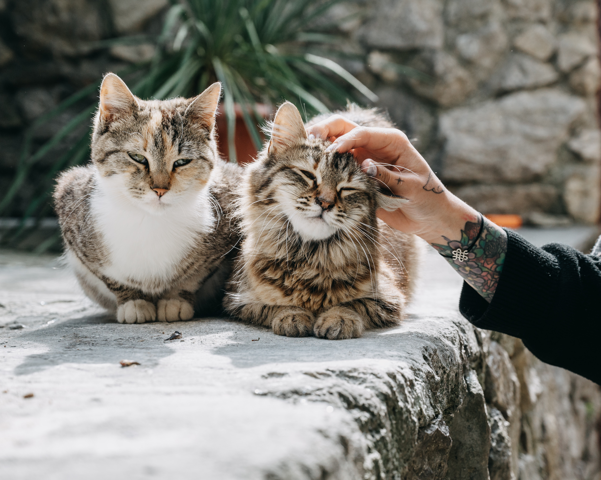

At Loved Pets Animal Rescue, we believe all animals deserve a chance to find a loving forever home. We provide initial veterinary care to rescued animals, then work to match each animal with a human family to love them and keep them safe forever. All animals are screened for diseases upon arrival, washed and groomed, and then added to our website for adoptive families to see. All potential adoptive families are also screened for adoption history, household lifestyle, and commitment to providing a safe and loving home.
We can always use volunteers to help keep our shelter open! Volunteers are needed to bathe and groom animals, play with pets to help them socialize and keep them happy, clean kennels and screening rooms, and help with administrative tasks in the office. If you’re interested in volunteering, please complete the steps below.